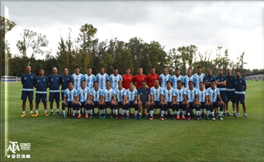
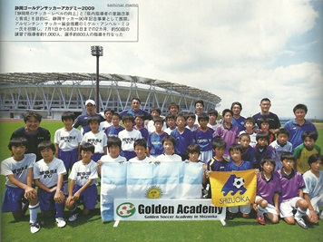

Cursos de Actualización
2016
Circuitos Neuro-Técnicos para entrenar la inteligencia Táctica de los Futbolistas.
Agosto 2016. Neurofut. Buenos Aires- Argentina.
2015
Tercer Seminario Internacional de Futbol.
17 y 18 de Noviembre. Conexión Futbol. Buenos Aires- Argentina.
2014
Segundo Seminario Internacional de Futbol.
14 de Agosto. Conexión Futbol. Buenos Aires- Argentina.
2005
Asistencia a Charla del Prof. ALFANO, Manuel.
Preparador físico del Club Mallorca de España.
2003
1er. Congreso Mundial de Directores Técnicos de Fútbol “Alfredo Di Stefano”.
Buenos Aires - Argentina
1996
Jornadas Internacionales de Excelencia en Medicina Deportiva.
Buenos Aires - Argentina
1995
Asistencia a Charlas de los Directores Técnicos José Peckerman y Hugo Tocalli.
Entrenadores de las Selecciones Juveniles de Argentina
Buenos Aires - Argentina
1992
Asistencia a charlas del Maestro Oscar W. Tabarez en la Asociación de Técnicos
Buenos Aires - Argentina
1991
Asistencias a Charlas del Dr. Carlos Salvador Bilardo en la Asociación de Técnicos
Buenos Aires - Argentina
1986
IV Congreso Nacional de Técnicos de Fútbol.
Expositores: Sr. Carlos T. Griguol; Sr. José Pastoriza; Sr. Héctor Veira; Sr. Cesar Luis Menotti.
Buenos Aires - Argentina
1985
III Congreso Nacional de Técnicos de Fútbol.
Buenos Aires - Argentina
1981
Curso de Administración Financiera de las Empresas
Curso de Programación Deportiva organizada por el I.T.E.S.M.
Chihuahua - México
1980
Cursos de Relaciones Humanas en el I.T.E.S
(Unidad Laguna Torreon Mexico).
Clínica Internacional de Natación, organizada por el
I.M.S.S. (Instituto Mexicano de Seguridad Social)
Acapulco - México
1975
Curso de Especialización para Maestros de Educación Física
I.M.S.S. de Gómez Palacio
Durango - México
Antecedentes como Conferencista
2017
Charlas en la Universidad Catolica.
“Futbol y valores, La promoción de la persona a través del futbol”.
Noviembre 2017. Buenos Aires- Argentina.
2014
Charlas en la Provincia de Buenos Aires.
“Futbol Infanto Juvenil”.
22/8 José C. Paz; 11/9 Ituaingo; 2/12 General Rodriguez;
5/12 Cañuelas; 8/12 San Miguel del Monte.
2013
Charla “Deporte Juvenil”. En la Universidad Catolica Argentina.
Disertantes: Pasman, Juan Carlos (periodísta); Club. Argentino Jrs;
Racing Club; All Boys: Coordinador Miguel Angel Micó (CABA. Argentina).
2011
Conferencista “V Congreso Internacional de Futbol”.
Agosto -Córdoba - Argentina
Clinica a jugadores y entrenadores de la Ciudad de Shizuoka Golden Soccer Academy.
Julio - Buenos Aires - Argentina
Clinica Universidad del Valle. México.
Junio - Torreón Coahuila - México
2010
Clínica en Japón. Golden Academy Soccer in Shizuoka.
Julio y Agosto.Buenos Aires - Argentina
Charla en Escuela de Técnicos J.Carlos Gimenez.
Metodología.
2009
Charla en la Escuela de Técnicos. Teórico – Práctico.
Junín - Pcia. de Buenos Aires - Argentina
2008
XXV Jornadas Multidisciplinarias. Hospital Parmenio T. Piñeiro.
Disertante: DT. Miguel Angel Micó, Dr. Carlos Salvador Bilardo, Dr. Vicente Converti.
Jornadas en la Universidad Interamericana.
Tema: Deporte y Liderazgo. Disertante: Miguel Angel Micó.
Congreso Pre-Mundialito de Roca.
Tema: Deporte y Liderazgo; Preparación al Futbol Profesional.
Disertante: DT. Miguel Angel Micó, DT. Ramon Cabrero, Prof.: Fernando Signorini.
Profesor en la Escuela de Directores Técnicos “Carlos Aldabe”
en la Cátedra “Técnica y Entrenamiento”.
1994 hasta 2001 (Ituzaingo. - Buenos Aires - Argentina).
2007
Charla para dirigentes deportivos en el Club River Plate.
Tema: “Selección, Formación y Proyección del jugador Juvenil.
Buenos Aires - Argentina
2006
Expositor I Congreso Internacional de Futbol en Avellaneda.
Buenos Aires - Argentina
2005
Simposium Amudera.
Tema: Preparación de Futbolistas a nivel de juveniles.
Buenos Aires - Argentina
2004
Clínica de preparación física, Entrenamiento de Arqueros y Organización de Fútbol Juvenil.
Prof.: ZUBELDIA, Gustavo; DT.:PIÑEIRO, Gustavo (Entrenador de Arqueros); DT.: MICÓ, Miguel A.
Mendoza - Argentina
Clínica para Técnicos Extranjeros.
Hotel Crillon. Argentina (de Venezuela – Ecuador – Colombia y México). Prof.: MAZZA, Oscar; DT.: MICÓ, Miguel A.
Charla en la Escuela de Técnicos de la Ciudad de Mendoza.
“Selección y Formación de Jugadores Juveniles.DT.: MICÓ, Miguel A.
2003
Charla en Escuela de Técnicos de Ciudadela.
Tema: Deportes ”…de la niñez a la competencia”.
Expositor:
1er. Congreso de Deporte, Salud y Calidad de Vida.
1er. Congreso Nacional de fútbol y Preparación Física.
Tema: Racing Club 2001 al 2003. Presentación en CD.
Mar del Plata. - Argentina.
Simposium Amudera
Tema: “Ejercicios de coordinación para jugadores de divisiones infantiles”.
Prof.: MAZZA, Oscar.DT.: MICÓ, Miguel A. (Publicación en revista).
2002
Charla en Escuela de Técnicos de Ciudadela.
Tema: “Planificación y Evaluación de Divisiones Juveniles”.
2001
1° Jornadas Interdisciplinarias de Fútbol Amateur.
Mesa redonda. Tema: “Director Técnico de Fútbol Amateur. Especialización”.
En el Club Velez Sarfield. DT: AIMAR, Luis; BAUZA, Edgardo; BORELLI,
Enrique; COCCO, Victorio; MICO, Miguel Angel; PERAZZO, Walter.
1997
Expositor en el Congreso de la Pampa. Provincia de Buenos Aires.
Expositor en: TIV Clínica en Renato Cesarini. “Sistematización de cabeceo”;
con jugadores de 7° - 6° y 5° del Club Atlético Lanus
Rosario - Santa Fe - Argentina
1996
Expositor en el VI Congreso Internacional de Técnicos
realizado en el CENARD. Presentando un trabajo práctico con 50 jugadores
de Divisiones Inferiores entre 15 y 17 años del Club Atlético Lanus
Buenos aires - Argentina
Expositor en la III Clínica Nacional Renato Cesarini.
Rosario - Santa Fe - Argentina
1994
Charla en el Club San Jorge
San Jorge - Provincia de Santa Fe. Argentina.
Charla en la Ciudad de Neuquen
Buenos Aires - Argentina
Conferencista en las Jornadas Deportivas celebradas en el Club Ferro Carril Oeste
Buenos Aires - Argentina
1993
Expositor en el V Congreso de Técnicos en el CENARD.
Presentando un trabajo práctico con 30 jugadores de divisiones inferiores
entre 15 y 17 años del Club Ferro Carril Oeste
Buenos Aires - Argentina
Charla en la Escuela de Técnicos de la Ciudad de Junín.
Buenos Aires - Argentina
Conferencista en las Jornadas Deportivas organizadas por el Club Ben-Hur de la Ciudad de Rafaela. Integrando un panel junto al Sr. Carlos Griguol y Sr. Mario Griguol
Provincia de Santa Fe. Argentina
Charla en la Ciudad de Dolores junto al cuerpo técnico del Club Ferro Carril Oeste
Buenos Aires - Argentina
1992
Charlas a los alumnos del Curso de Profesores de Educación Física en el CENARD.
Tema: Divisiones Inferiores. Programación
Buenos Aires - Argentina
1987
Encuentro Técnico – Didáctico sobre orientación del Fútbol Juvenil.
Buenos Aires - Argentina
Experiencia Profesional
ARGENTINA
2018 - Actualidad
Director Deportivo de la Universidad Austral.
2016 - 2017
Coordinador General y Director Tecnico Selecciones Juveniles Argentina.

2012 - 2013
Coordinador General del fútbol juvenil del Club All Boys.
2011
Asesor Golden Academy Soccer in Shizuoka. Japon
Visita Sub-12. Selección de Shizuoka y Entrenadores. Japon.
Julio 2011. Ciudad Autonoma de Buenos Aires. Argentina.

2011
Clínica en Argentina para Tecnicos, maestros y jugadores Sub 12 de Shizuoka.
Agosto 2011. Japón
2009 - 2010
Clínica en Japón. Golden Academy Soccer in Shizuoka.
Julio y Agosto 2009/2010.
2008
Director Técnico del Plantel Profesional de Racing Club.
2006 - 2007
Coordinador General del fútbol juvenil del Club Racing.
Director Técnico de Reserva. (Buenos Aires- Argentina).
Técnico Interino 1° División.
2005
Coordinador general del Fútbol Juvenil del Club Gimnasia y Esgrima de la Plata.
2001 - 2004
Coordinador General del fútbol juvenil del Club Racing.
Director Técnico de Reserva. (Buenos Aires- Argentina).
1996 - 2000
Coordinador General del Fútbol Juvenil del Club Atlético Lanus.
Director Técnico de 5ª y 6ª división.(Buenos Aires- Argentina).
1994
Director Técnico del Plantel Profesional del Club Ferro Carril Oeste
Buenos Aires- Argentina.
1989
Invitado por el Sr. Carlos Salvador Bilardo, Sr. Carlos Pachame
como acompañante de la Selección Argentina a la Ciudad de Barranquillas (Colombia).
1985
Director Técnico de las divisiones inferiores del Club Ferro Carril Oeste
formando parte del cuerpo técnico encabezado por el Sr. Carlos T. Griguol.
Dirigiendo hasta Mayo de 1994, desde 7ma. División hasta la reserva.
1984
Preparador Físico del plantel profesional del Club Defensores de Belgrano
De la División “B” del Fútbol Argentino. Sub - Campeón.
1983
Preparador Físico del plantel profesional del Club El Porvenir.
De la división “B” del Fútbol Argentino
Preparador Físico de las Divisiones Infantiles, Juveniles del Club Ferro Carril Oeste.
MÉXICO
1981 - 1982
Director de Deportes del Instituto Tecnológico y de Estudios Superiores de Monterrey.
Unidad Laguna.(Torreón Coahuila - México).
1979
Fundador de la Liga Especial de Fútbol Amateur de la Laguna.
Ocupando hasta Diciembre de 1982 el cargo de Asesor Técnico.
Torreón Coahuila - México
1978
Coordinador Deportivo y Director Técnico del equipo de Fútbol,
categoría superior del Instituto Tecnológico y de Estudios Superiores de Monterrey.
Unidad Laguna. (Torreón Coahuila- México).
Integrante de la Comisión de Honor y Justicia de los
Juegos Inter Unidades en la Ciudad de Monterrey
Nuevo León - México.
1975
Creador de los Cursos de Verano en el Club Campestre Torreón S.A.
Ocupando el cargo de Director hasta el año 1981.
Torreón Coahuila - México.
Escuela de Fútbol del Club Campestre Torreón S.A., para niños de 6 a 14 años
Torreón Coahuila - México.
1974 - 1975
Director Técnico de Fútbol del Instituto Francés de la Laguna.
Gómez Palacio - Durango. México.